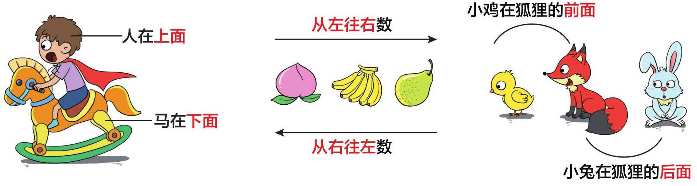
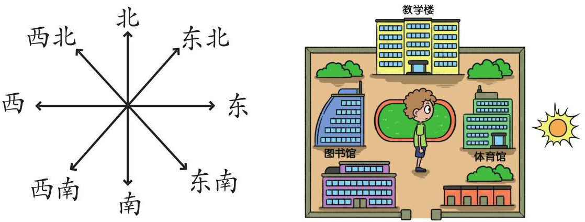
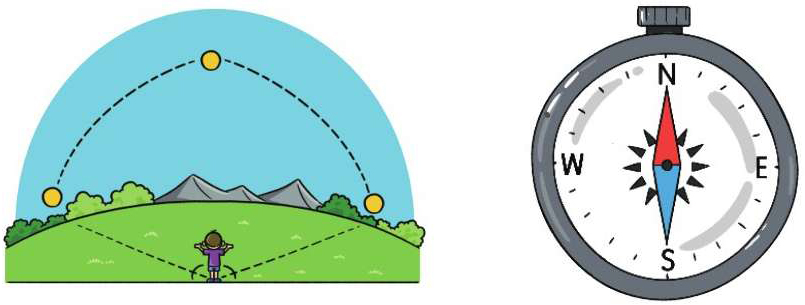

上下、左右、前后

方向与地图
地图通常按照上北下南、左西右东的方向绘制。
早上起来，面向太阳，前面是东，后面是西，左面是北，右面是南。

数对
数对是由行数与列数组成的，通常写作（a，b）。通过行数与列数，我们就能确定物体的位置。
比例尺
·比例尺＝图上距离∶实际距离。
·数字比例尺：图上距离1cm代表实地距离5km，可以写成1∶500 000。
·线段比例尺：用线段的形式表示图上距离与实际距离的关系。
日常生活中判断方位的简易方法
可以通过太阳东升西落、影子方向、积雪融化速度、树叶稀疏程度、指南针、北斗星以及风向等来判断方位。
